Claude Code Agent Monitor
A professional monitoring platform for Claude Code agent activity. Captures sessions, agents, and tool events via native hooks, persists them in SQLite, and streams updates to a React UI over WebSocket — with no external services required.
System Overview
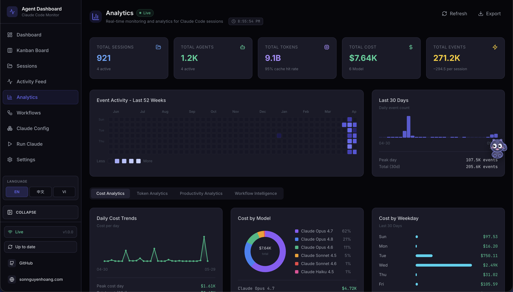
Claude Code Agent Monitor integrates with Claude Code through its native hook system. When Claude Code performs any action — tool use, session start, subagent orchestration, session end — it fires a hook that calls a small Node.js script bundled with this project. That script forwards the event over HTTP to the dashboard server, which stores it in SQLite and broadcasts it to the browser over WebSocket.
End-to-end data pipeline from Claude Code to the browser
The server binds to 0.0.0.0 but everything runs on your machine. No
data leaves your system. No API keys. No external services.
What's Included
Every feature is driven by real hook events — nothing is hardcoded or simulated in production mode.
Screenshots
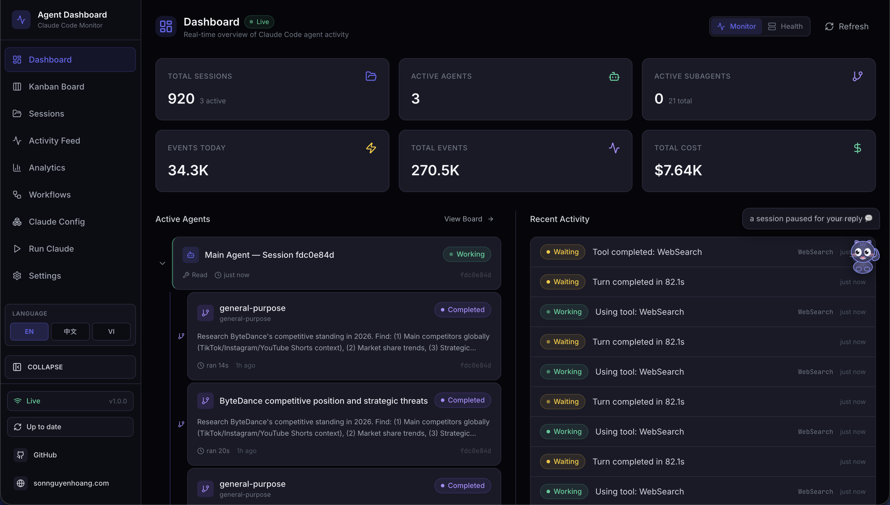
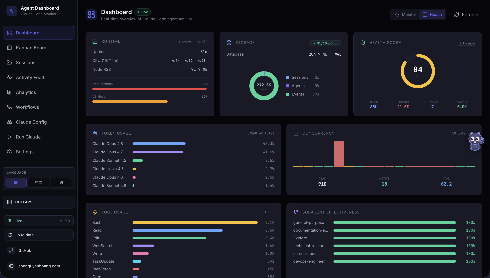

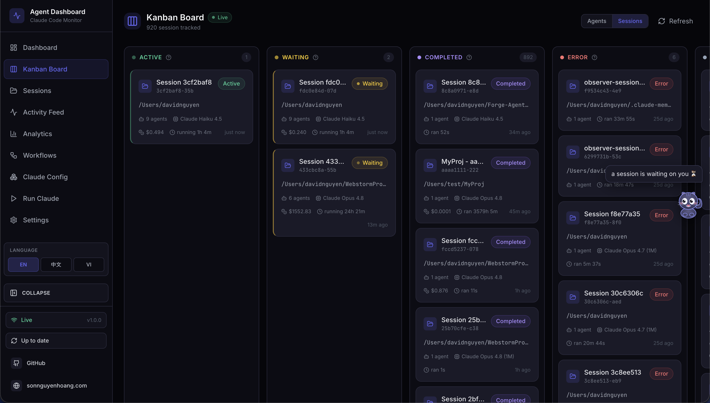
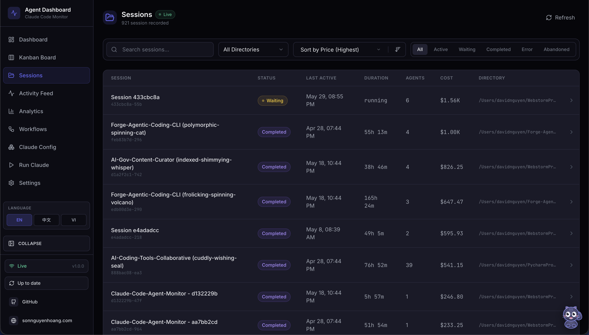
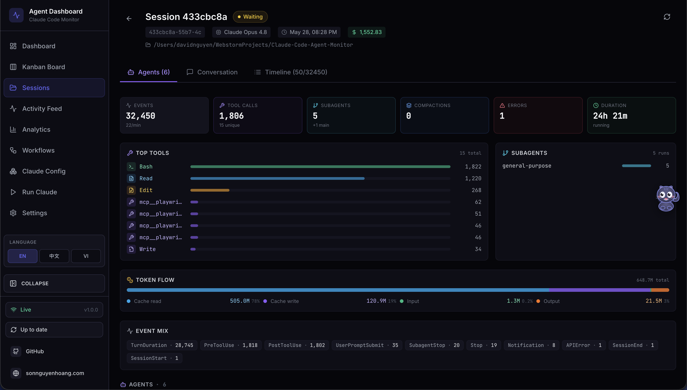
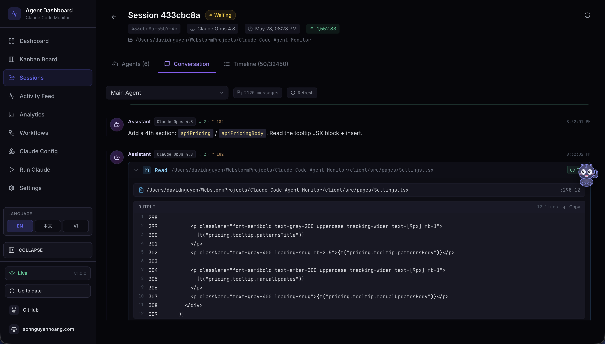
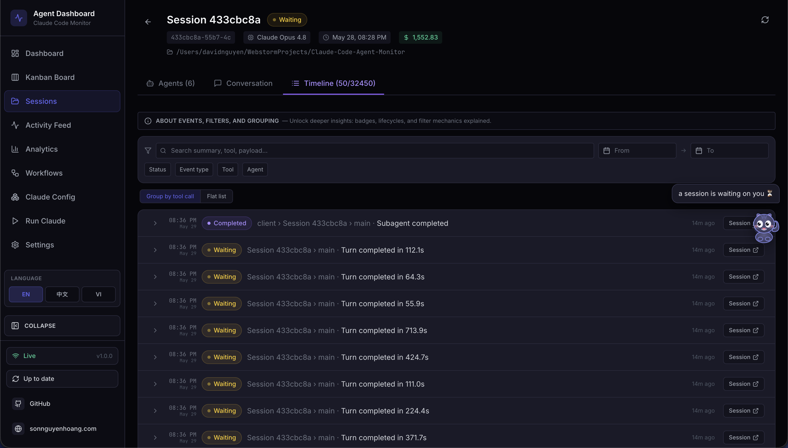
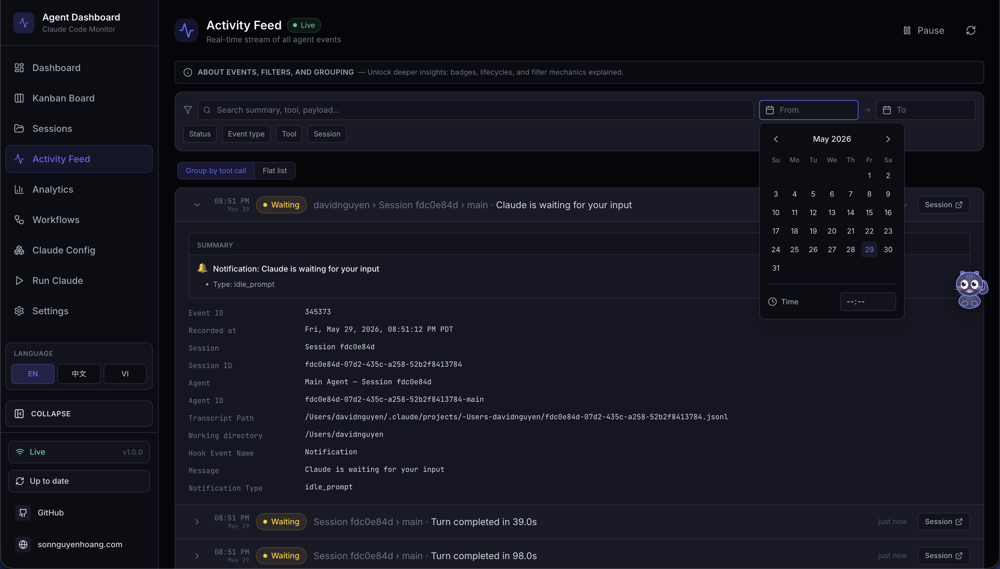
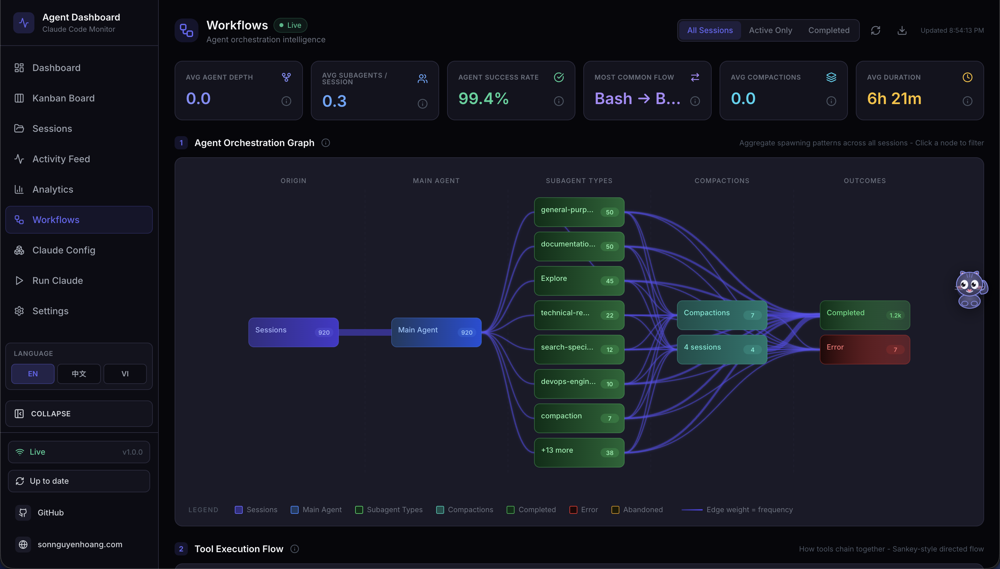
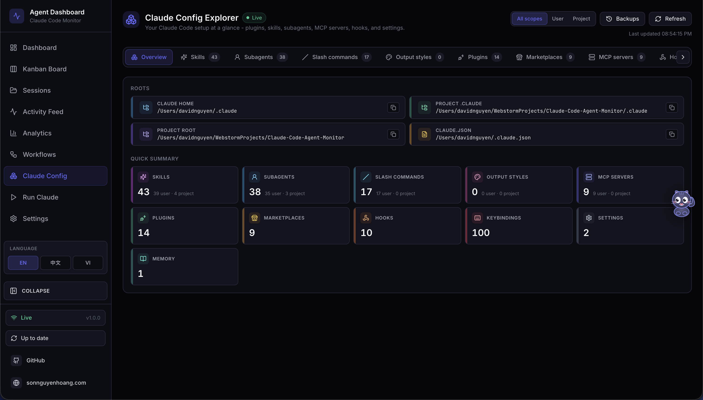
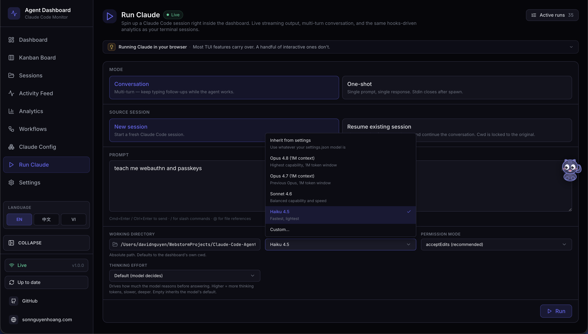
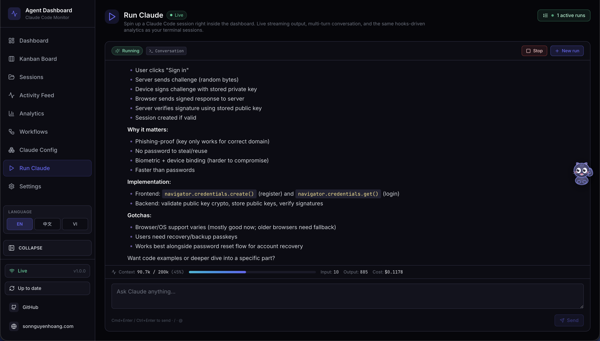
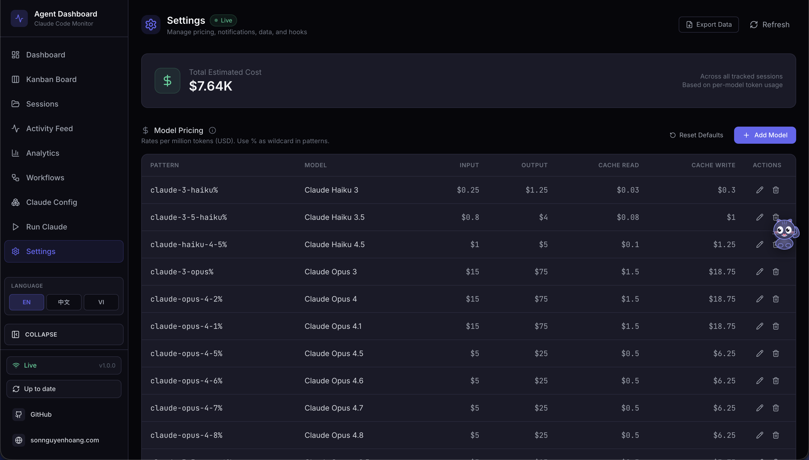
GitHub Star History
This chart tracks how interest in Claude Code Agent Monitor has grown over time. The curve keeps climbing as more developers discover the project, share it, and use it in real workflows. Each new star is a small vote of confidence from the community.
Hook Events Captured
| Hook Type | Trigger | Dashboard Action |
|---|---|---|
SessionStart |
Claude Code session begins |
Creates session and main agent. Stamps awaiting_input_since so the row lands in Waiting from the start (the CLI is at a prompt). Reactivates resumed sessions. Abandons orphaned sessions with no activity for DASHBOARD_STALE_MINUTES (default 180).
|
UserPromptSubmit |
User hits enter on a prompt |
Clears the waiting flag and promotes the main agent to
Working. The only reliable signal that text-only assistant turns have started — they emit no PreToolUse before Stop.
|
PreToolUse |
Agent begins using a tool |
Clears the waiting flag, sets agent →
Working, current_tool set. If tool is Agent, subagent record created.
|
PostToolUse |
Tool execution completes |
Clears the waiting flag (covers permission-prompt approvals mid-tool).
current_tool cleared. Agent stays
Working.
|
Stop |
Claude finishes a turn |
Non-error: main agent → waiting — UI shows
Waiting until the next user input. stop_reason=error: marks the agent and session
Error. Background subagents keep running.
|
SubagentStop |
Background agent finished |
Matched subagent →
Completed. Deliberately does not clear the waiting flag — a backgrounded subagent finishing tells us nothing about the human. Also kicks off a fire-and-forget JSONL scan (scanAndImportSubagents) that walks the session's subagents/agent-*.jsonl files, pairs tool_use ↔ tool_result blocks by tool_use_id, and emits per-tool PreToolUse + PostToolUse events under each subagent's own agent_id — surfaces tool calls that subagents make internally and which never fire any hooks.
|
Notification |
Agent sends notification | Event logged to activity feed. Permission/input-prompt patterns (e.g. "needs your permission", "waiting for your input") set the agent to waiting and stamp awaiting_input_since. Compaction-related notifications tagged as Compaction events. Triggers a browser notification if enabled. |
Compaction |
/compact detected in JSONL |
Creates a compaction subagent →
Completed. Detected via isCompactSummary entries in the transcript. Token baselines preserve pre-compaction totals. Periodic scanner (cadence ~¼ of DASHBOARD_STALE_MINUTES) catches compactions when no hooks fire.
|
APIError |
API error detected in transcript | Extracted from JSONL during history import, real-time transcript scanning, or the error detection watchdog. Captures quota limits, rate limits, auth failures, and other API errors. Immediately marks sessions and agents as error — previously recorded as events without changing status. |
TurnDuration |
Per-turn timing recorded | Extracted from JSONL turn boundaries. Records the duration of each assistant turn for latency analysis. |
SessionEnd |
Claude Code CLI process exits | Drops the waiting flag. If the session is already in Error, the error state is preserved; otherwise marks all agents and the session as Completed. Evicts the session's transcript from the shared cache. |
Quick Start
Clone
Clone the repository to your machine
Install
Run npm run setup to install all dependencies
Start
Run npm run dev — server + client launch automatically
Use Claude
Start a new Claude Code session — events appear in real-time
# 1. Clone
git clone https://github.com/hoangsonww/Claude-Code-Agent-Monitor.git
cd Claude-Code-Agent-Monitor
# 2. Install all dependencies (server + client)
npm run setup
# Optional: manually install hooks for container deployments
# or if auto-install on server startup fails
npm run install-hooks
# 3. Start in development mode
npm run dev
# → Express server on http://localhost:4820
# → Vite dev server on http://localhost:5173
# 4. (Optional) Build and run the local MCP server
npm run mcp:install
npm run mcp:build
npm run mcp:start # stdio (for MCP host integration)
npm run mcp:start:http # HTTP + SSE server on port 8819
npm run mcp:start:repl # interactive CLI with tab completion
# 5. Open the dashboard
# http://localhost:5173 (dev)
# http://localhost:4820 (prod after npm run build && npm start)Alternative: Docker / Podman
A multi-stage Dockerfile and docker-compose.yml are included.
You can run the monitor with either Docker or Podman and keep the SQLite database in a
named volume.
# Docker Compose
docker compose up -d --build
# Podman Compose
CLAUDE_HOME="$HOME/.claude" podman compose up -d --build
# Plain Docker / Podman
docker build -t agent-monitor .
docker run -d --name agent-monitor \
-p 4820:4820 \
-v "$HOME/.claude:/root/.claude:ro" \
-v agent-monitor-data:/app/data \
agent-monitor
When you run the server directly on the host with npm run dev or
npm start, it automatically writes Claude Code hook entries to
~/.claude/settings.json. If you run the dashboard in Docker or Podman,
install hooks from the host with npm run install-hooks after the
container is up, then restart Claude Code.
Optional: Enable MCP and Agent Extensions
This repository also ships a local MCP server under mcp/ and extension
scaffolding for both Claude Code and Codex. These are optional for the dashboard UI, but
recommended for complete local-agent workflows. The MCP server supports stdio (for host
integration), HTTP+SSE (for remote clients), and an interactive REPL (for operator
debugging).
# MCP lifecycle
npm run mcp:install
npm run mcp:build
npm run mcp:start # stdio (default — for MCP hosts)
npm run mcp:start:http # HTTP + SSE server on port 8819
npm run mcp:start:repl # interactive CLI with tab completionVerification
After starting a Claude Code session, you should see:
| Page | Expected |
|---|---|
| Sessions | Your session listed with status Waiting (a fresh CLI is sitting at the prompt) — flips to Active the moment Claude starts a turn |
| Kanban Board | A Main Agent card in the Waiting column until you type your first message; flips to Working on UserPromptSubmit / PreToolUse and back to Waiting after each Stop |
| Activity Feed | Events streaming in; click any row to expand payload, use "Session →" to drill into session details |
| Dashboard | Stats updating in real-time |
Hooks only fire to a running server. If Claude Code was already running when you started the dashboard, restart the Claude Code session.
Configuration
Environment Variables
| Variable | Default | Description |
|---|---|---|
DASHBOARD_PORT |
4820 |
Port the Express server listens on |
CLAUDE_DASHBOARD_PORT |
4820 |
Port used by the hook handler to reach the server (for custom port setups) |
MCP_DASHBOARD_BASE_URL |
http://127.0.0.1:4820 |
Base URL used by the local MCP server when calling dashboard APIs |
MCP_TRANSPORT |
stdio |
MCP transport mode: stdio, http, repl |
MCP_HTTP_PORT |
8819 |
Port for the MCP HTTP+SSE server (only when MCP_TRANSPORT=http) |
MCP_HTTP_HOST |
127.0.0.1 |
Bind address for the MCP HTTP server |
DASHBOARD_DB_PATH |
data/dashboard.db |
Path to the SQLite database file |
NODE_ENV |
development |
Set to production to serve built client from
client/dist/
|
Hook Configuration
The server writes the following to ~/.claude/settings.json on every
startup:
{
"hooks": {
"SessionStart": [
{ "hooks": [{ "type": "command", "command": "node \"/path/to/scripts/hook-handler.js\" SessionStart" }] }
],
"PreToolUse": [
{ "matcher": "*", "hooks": [{ "type": "command", "command": "node \"/path/to/scripts/hook-handler.js\" PreToolUse" }] }
],
"PostToolUse": [
{ "matcher": "*", "hooks": [{ "type": "command", "command": "node \"/path/to/scripts/hook-handler.js\" PostToolUse" }] }
],
"Stop": [{ "matcher": "*", "hooks": [{ "type": "command", "command": "node \"/path/to/scripts/hook-handler.js\" Stop" }] }],
"SubagentStop": [{ "matcher": "*", "hooks": [{ "type": "command", "command": "node \"/path/to/scripts/hook-handler.js\" SubagentStop" }] }],
"Notification": [{ "matcher": "*", "hooks": [{ "type": "command", "command": "node \"/path/to/scripts/hook-handler.js\" Notification" }] }],
"SessionEnd": [
{ "hooks": [{ "type": "command", "command": "node \"/path/to/scripts/hook-handler.js\" SessionEnd" }] }
]
}
}
Existing hooks are preserved. The installer only adds or updates entries containing
hook-handler.js.
Scripts Reference
| Script | Command | Description |
|---|---|---|
setup |
npm run setup |
Install all dependencies (server + client) |
dev |
npm run dev |
Start server + client in development mode with hot reload |
dev:server |
npm run dev:server |
Start only the Express server with --watch |
dev:client |
npm run dev:client |
Start only the Vite dev server |
build |
npm run build |
TypeScript check + Vite production build to client/dist/ |
start |
npm start |
Start Express in production mode serving built client |
install-hooks |
npm run install-hooks |
Manually write Claude Code hooks to ~/.claude/settings.json |
seed |
npm run seed |
Insert demo sessions, agents, and events (8 sessions / 23 agents / 106 events) |
import-history |
npm run import-history |
Import historical Claude Code sessions from ~/.claude with deep JSONL extraction (API errors, turn durations, thinking blocks, subagent data) |
clear-data |
npm run clear-data |
Delete all data from the database (keeps schema) |
test |
npm test |
Run all server and client tests |
test:server |
npm run test:server |
Server integration tests only (Node built-in test runner) |
test:client |
npm run test:client |
Client unit tests only (Vitest + Testing Library) |
mcp:install |
npm run mcp:install |
Install dependencies for the local MCP package under mcp/ |
mcp:typecheck |
npm run mcp:typecheck |
Type-check MCP source without emitting build output |
mcp:build |
npm run mcp:build |
Compile MCP server into mcp/build/ |
mcp:start |
npm run mcp:start |
Start MCP server (stdio transport — for MCP hosts) |
mcp:start:http |
npm run mcp:start:http |
Start MCP HTTP+SSE server on port 8819 (Streamable HTTP + legacy SSE) |
mcp:start:repl |
npm run mcp:start:repl |
Start interactive MCP REPL with tab completion and colored output |
mcp:dev |
npm run mcp:dev |
Run MCP server in dev mode with tsx (stdio) |
mcp:dev:http |
npm run mcp:dev:http |
Run MCP HTTP server in dev mode with tsx |
mcp:dev:repl |
npm run mcp:dev:repl |
Run MCP REPL in dev mode with tsx |
mcp:docker:build |
npm run mcp:docker:build |
Build MCP container image with Docker (agent-dashboard-mcp:local) |
mcp:podman:build |
npm run mcp:podman:build |
Build MCP container image with Podman
(localhost/agent-dashboard-mcp:local)
|
test:mcp |
npm run test:mcp |
Run MCP server unit tests |
desktop:install |
npm run desktop:install |
Install Electron + electron-builder under desktop/; rebuilds better-sqlite3 for Electron's ABI |
desktop:build |
npm run desktop:build |
Prebuild guard + tsc compile of the Electron main process into desktop/out/ |
desktop:dev |
npm run desktop:dev |
Build, then launch the desktop app against desktop/out/main.js |
desktop:test |
npm run desktop:test |
Desktop smoke test — spawn Electron and probe /api/health |
desktop:dmg |
npm run desktop:dmg |
Build a universal (x64 + arm64) DMG. Correct for release — intentionally slow |
desktop:dmg:arm64 |
npm run desktop:dmg:arm64 |
Build an Apple-Silicon-only DMG — fast (~1 min), recommended for a single machine |
desktop:dmg:x64 |
npm run desktop:dmg:x64 |
Build an Intel-only DMG — fast |
format |
npm run format |
Format all files with Prettier |
format:check |
npm run format:check |
Check formatting without writing |
System Architecture
Core dashboard telemetry is composed of three processes (Claude hook source, dashboard server, browser UI). When the local MCP sidecar is enabled, it integrates with the same dashboard API via stdio, HTTP+SSE, or interactive REPL transport.
Full system architecture — Claude Code process → Hook Layer → Server → Browser
Agent State Machine
Agent status transitions driven by hook events. waiting is a real persisted status — agents start as waiting and return to it after each turn. Error recovery requires active user retry (UserPromptSubmit or PreToolUse). A background watchdog detects API errors in transcripts every 15 s.
Session State Machine
Session status lifecycle. waiting is a UI overlay — persisted as active with awaiting_input_since set. SessionEnd preserves error state. Error recovery requires UserPromptSubmit or PreToolUse.
Data Flow
Event Ingestion Pipeline
Parses JSON and adds hook_type HH->>API: POST {"hook_type":"PreToolUse","data":{...}} API->>TX: BEGIN TRANSACTION TX->>TX: ensureSession(session_id) Note over TX: Creates session + main agent
on first contact TX->>TX: process by hook_type Note over TX: SessionStart → stamp awaiting flag (Waiting)
UserPromptSubmit → clear flag, agent working
PreToolUse → clear flag, agent working
PostToolUse → clear flag, clear current_tool
Stop non-error → agent waiting
Stop error → agent error, session error
SubagentStop → complete matched subagent
(does NOT touch flag) — fire-and-forget
scanAndImportSubagents emits per-tool
Pre/PostToolUse events under each
subagent's own agent_id
Notification permission → stamp flag
SessionEnd → drop flag, mark all completed TX->>TX: insertEvent(...) TX->>TX: COMMIT API->>WS: broadcast("agent_updated", agent) API->>WS: broadcast("new_event", event) WS->>UI: {"type":"agent_updated","data":{...}} UI->>UI: eventBus.publish -> page re-renders
Complete event ingestion from hook fire to browser re-render
Client Data Loading Pattern
Initial load + WebSocket subscription lifecycle
Server Architecture
Express app + HTTP server"] DB["server/db.js
SQLite + prepared statements
better-sqlite3 / node:sqlite fallback"] WS["server/websocket.js
WS server + heartbeat"] HOOKS["routes/hooks.js
Hook event processing"] SESSIONS["routes/sessions.js
Session CRUD"] AGENTS["routes/agents.js
Agent CRUD"] EVENTS["routes/events.js
Event listing"] STATS["routes/stats.js
Aggregate queries"] ANALYTICS["routes/analytics.js
Analytics metrics"] PRICING["routes/pricing.js
Pricing CRUD + cost calc"] SETTINGS_R["routes/settings.js
System info + data mgmt"] WORKFLOWS_R["routes/workflows.js
Workflow visualizations"] INDEX --> DB INDEX --> WS INDEX --> HOOKS INDEX --> SESSIONS INDEX --> AGENTS INDEX --> EVENTS INDEX --> STATS INDEX --> ANALYTICS INDEX --> PRICING INDEX --> SETTINGS_R INDEX --> WORKFLOWS_R HOOKS --> DB HOOKS --> WS SESSIONS --> DB SESSIONS --> WS AGENTS --> DB AGENTS --> WS EVENTS --> DB STATS --> DB ANALYTICS --> DB PRICING --> DB SETTINGS_R --> DB WORKFLOWS_R --> DB
Server module dependency graph
Server Modules
| Module | Responsibility |
|---|---|
server/index.js |
Express app setup, middleware (CORS, JSON 1MB limit), route mounting, static serving in production, HTTP server, auto-hook installation on startup |
server/db.js |
SQLite connection, WAL/FK pragmas, schema migrations (CREATE TABLE IF NOT EXISTS), all prepared statements as a reusable stmts object. Tries
better-sqlite3 first, falls back to built-in
node:sqlite via compat-sqlite.js
|
server/compat-sqlite.js |
Compatibility wrapper giving Node.js built-in node:sqlite
(DatabaseSync) the same API as better-sqlite3 —
pragma, transaction, prepare. Used as automatic fallback on Node 22+
|
server/websocket.js |
WebSocket server on /ws path, 30s ping/pong heartbeat, typed
broadcast(type, data) function
|
routes/hooks.js |
Core event processing inside SQLite transactions. Auto-creates sessions/agents. Switch-case dispatch by hook type. Extracts token usage from Stop events. |
routes/sessions.js |
CRUD with pagination. GET includes agent count via LEFT JOIN. POST is idempotent on session ID. |
routes/agents.js |
CRUD with status/session_id filtering. PATCH broadcasts
agent_updated.
|
routes/events.js |
Read-only event listing with session_id filter and pagination. |
routes/stats.js |
Single aggregate query — total/active counts, status distributions, WS connection count. |
routes/analytics.js |
Extended analytics — token totals, tool usage counts, daily event/session trends, agent type distribution, event type breakdown, average events per session. |
routes/pricing.js |
Model pricing CRUD (list, upsert, delete). Per-session and global cost calculation with pattern-based model matching and specificity sorting. |
routes/settings.js |
System info (DB size, row counts, hook status, server uptime). Data export as JSON. Session cleanup (abandon stale active sessions, purge old completed sessions). Clear all data. Reset pricing to defaults. Reinstall hooks. |
routes/workflows.js |
Aggregate workflow visualization data (agent orchestration, tool transitions,
collaboration networks, workflow patterns, model delegation, error propagation,
concurrency, session complexity, compaction impact). Accepts
?status=active|completed filter. Per-session drill-in with
agent tree, tool timeline, and events.
|
Client Architecture
React component tree
Client Routes
Key Client Modules
| Module | Purpose |
|---|---|
lib/api.ts |
Typed fetch wrapper — one method per REST endpoint. All return typed promises. |
lib/types.ts |
TypeScript interfaces: Session, Agent,
DashboardEvent, Stats, Analytics,
WSMessage, plus all workflow-related types
(WorkflowData, SessionDrillIn, etc). Status config
maps.
|
lib/eventBus.ts |
Set-based pub/sub. subscribe(fn) returns an unsubscribe function
for clean useEffect teardown.
|
lib/format.ts |
Date/time formatting helpers — relative time, duration, ISO display. |
hooks/useWebSocket.ts |
Auto-reconnecting WebSocket React hook. 2-second reconnect interval. Publishes messages to eventBus. |
PWA & Service Worker
The dashboard is a Progressive Web App with its own
manifest.json and Service Worker
(client/public/sw.js). The landing page and wiki are
also independent PWAs with separate manifests and service workers.
| Surface | Manifest | Service Worker | Strategy |
|---|---|---|---|
| Dashboard | client/public/manifest.json |
client/public/sw.js |
Precaches app shell. Cache-first for static assets (JS/CSS
bundles). Network-first for navigation with offline fallback.
Skips /api/*, /ws, and Vite HMR.
Preserves push notification handlers.
|
| Landing page | manifest.json (root) |
sw.js (root) |
Precaches HTML shell, favicon, OG image. Lazy-caches screenshot PNGs on first view. Network-first HTML, cache-first assets. |
| Wiki | wiki/manifest.json |
wiki/sw.js |
Precaches index.html, style.css,
script.js. Fully offline after one visit.
|
All three SWs call skipWaiting() on install and delete
stale caches on activate (keyed by version strings like
dashboard-v1). Manifests use SVG icons
(favicon.svg) with sizes="any". iOS
standalone mode is enabled via
apple-mobile-web-app-capable meta tags.
State Management
The client deliberately avoids Redux / Zustand / Context. Each page owns its data and lifecycle. WebSocket events trigger a reload or append — no complex state merging.
Each page pulls initial data from REST then subscribes to eventBus for live updates
There is no cross-page shared state. Each page fetches and owns exactly the data it displays. This simplifies debugging and avoids stale-closure hazards that are common with global stores in long-running WebSocket apps.
Database Design
Entity Relationship Diagram — SQLite schema
Indexes
| Index | Table | Column(s) | Purpose |
|---|---|---|---|
idx_agents_session |
agents | session_id |
Fast agent lookup by session |
idx_agents_status |
agents | status |
Kanban column queries |
idx_events_session |
events | session_id |
Session detail event list |
idx_events_type |
events | event_type |
Filter events by type |
idx_events_created |
events | created_at DESC |
Activity feed ordering |
idx_sessions_status |
sessions | status |
Status filter on sessions page |
idx_sessions_started |
sessions | started_at DESC |
Default sort order |
SQLite Configuration
| Pragma | Value | Rationale |
|---|---|---|
journal_mode |
WAL |
Concurrent reads during writes. Far better for read-heavy dashboards. |
foreign_keys |
ON |
Referential integrity — prevents orphaned agents/events. |
busy_timeout |
5000 |
Wait up to 5s for write lock instead of failing immediately under load. |
API Reference
All endpoints return JSON. Errors follow
{ "error": { "code", "message" } }. The full OpenAPI 3.0 spec is
served at /api/openapi.json and rendered as interactive Swagger UI
at /api/docs.

/api/docs — auto-generated interactive playground for every REST endpoint. Try-it-out forms, request/response schema, auth headers, and curl snippetsHealth
{ "status": "ok", "timestamp": "..." }
Sessions
status, q (case-insensitive search across
id/name/cwd), limit
(default 50, max 10000), offset. Response includes
total for paginators.
id)
Agents
status, session_id,
limit, offset
Events, Stats, Analytics
session_id, limit,
offset
Hooks Ingestion
Pricing
Settings
Import History
~/.claude/projects folder
~/.claude/projects directory; safe to re-run
(idempotent via session-ID dedup)
{ path }); tilde
(~) is expanded; walks subdirectories recursively and imports every
.jsonl found
.jsonl, .meta.json,
.zip, .tar, .tar.gz, .tgz,
.gz. Per-request staging dir, path-traversal and extraction-size
guards. Returns 413 EXTRACTION_LIMIT_EXCEEDED on suspected
bomb archives
Workflows
?status=active|completed query param
to filter by workflow status
{
"hook_type": "PreToolUse",
"data": {
"session_id": "abc-123",
"tool_name": "Bash",
"tool_input": { "command": "ls -la" }
}
}WebSocket Protocol
| Property | Value |
|---|---|
| Path | ws://localhost:4820/ws |
| Protocol | Standard WebSocket (RFC 6455) |
| Heartbeat | Server pings every 30s — clients that don't pong are terminated |
| Reconnect | Client retries every 2 seconds on disconnect |
Message Envelope
// All messages use this shape
{
type: "session_created" | "session_updated" |
"agent_created" | "agent_updated" | "new_event";
data: Session | Agent | DashboardEvent;
timestamp: string; // ISO 8601
}Client WebSocket auto-reconnect state machine
Hook Integration
Hook Handler Design
scripts/hook-handler.js is a minimal, fail-safe forwarder. It always exits
0 so it can never block Claude Code regardless of server state.
hook-handler.js flow — always exits 0, never blocks Claude Code
Hook Installation Flow
Hook installation is idempotent — safe to run multiple times
Import Pipeline
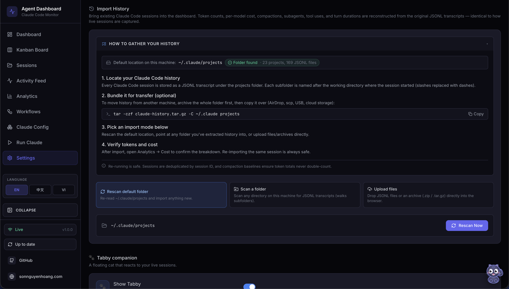
.gz archives. Progress bar and result card show counts for every run
The dashboard ships with a first-class history importer that backfills
sessions, agents, events, tokens, and costs from Claude Code JSONL transcripts.
Live hook ingestion and manual import share the exact same parser —
parseSessionFile + importSession in
scripts/import-history.js — which is the architectural contract that
guarantees imported token totals and cost values are identical to those captured in
real time. Re-imports are idempotent: session IDs are the dedup key and compaction
baseline_* columns preserve pre-compaction token totals.
Three Modes, One Pipeline
All three modes funnel into the same parser and DB transaction — imported numbers match live capture bit-for-bit
Upload Request Sequence
Upload path: multipart → safe extract → walk → parse → import — every temp dir
reclaimed in finally
Idempotence & Cost Accuracy
The baseline_* columns make cost monotonic under re-imports —
compacted sessions retain pre-compaction usage for billing
Supported Source Layouts
| Layout | Example | Handling |
|---|---|---|
| Default Claude Code | <proj>/<sid>.jsonl |
Session transcript — extracts tokens, compactions, tool uses, turn durations |
| Default subagent | <proj>/<sid>/subagents/agent-*.jsonl |
Paired with parent on discovery via findSessionSubagents |
| Alternative subagent | <proj>/subagents/<sid>/agent-*.jsonl |
Paired with parent on discovery (second layout probed automatically) |
| Orphan subagent | No parent JSONL in source, but sid exists in DB |
importFromDirectory probes both layouts; attaches if the parent is found |
| Flat JSONL drop | <root>/<sid>.jsonl |
Recognized as a loose session transcript |
| Archives | .zip, .tar, .tar.gz, .tgz |
Extracted into a per-request temp dir, then walked by the same importer |
| Single-file gzip | any.jsonl.gz |
Gunzipped in streaming mode with running byte-counter size cap |
Safety Model
| Threat | Mitigation |
|---|---|
| Path traversal via archive entries | archive.safeJoin resolves under the extraction root; any .. or absolute path returns null |
| Zip / tar / gzip bombs | MAX_EXTRACT_BYTES (default 4 GB) enforced by running byte counter; aborts with ExtractionLimitError → HTTP 413 |
| Per-file upload size abuse | multer limits.fileSize = MAX_UPLOAD_BYTES (default 1 GB) |
| Too many files per request | multer limits.files = MAX_UPLOAD_FILES (default 2000) |
| Unsupported file types | fileFilter drops them early and reports them in rejected_files[] |
| Concurrent upload temp-dir collisions | Per-request temp dir on req._ccamUploadDir; created in multer destination, reclaimed in finally |
Arbitrary absolute path on scan-path |
Validated: must be absolute (after ~ expansion), exist, and be a directory |
Relative / traversal paths on scan-path |
Rejected with INVALID_INPUT |
Environment Variables
| Variable | Default | Purpose |
|---|---|---|
CCAM_IMPORT_MAX_BYTES |
1 GB | Maximum size per uploaded file on /api/import/upload |
CCAM_IMPORT_MAX_FILES |
2000 | Maximum files per upload request |
CCAM_IMPORT_MAX_EXTRACT_BYTES |
4 GB | Ceiling on total uncompressed bytes from any single archive (zip-bomb defense) |
WebSocket Progress Events
Every import emits import.progress messages on /ws. Messages
are throttled to at most one every ~150 ms to avoid flooding the channel on
multi-thousand-session imports; the terminal complete and
error frames are never throttled.
{
"type": "import.progress",
"timestamp": "2026-04-18T15:48:34.123Z",
"data": {
"importId": "upload-1729264114000",
"phase": "parse",
"source": "upload",
"processed": 184,
"total": 512,
"current": "/tmp/ccam-import-work-xyz/project/<uuid>.jsonl",
"counters": { "imported": 120, "backfilled": 40, "skipped": 20, "errors": 4 }
}
}
Phases: start → scan → extract (upload only)
→ parse → complete, with error /
extract_error replacing complete on failure.
MCP & Agent Extensions
In addition to dashboard telemetry, this project includes a production-grade local MCP server and complete extension scaffolding for both Claude Code and Codex. This gives agents a richer local tool surface while keeping all execution local-first. The MCP server supports three transport modes: stdio for host integration, HTTP+SSE for remote clients, and an interactive REPL for operator debugging.

Local extension architecture: host instructions + skills + multi-transport MCP sidecar
Local MCP Server Runtime
The mcp/ package exposes dashboard-oriented tools for AI agents across three
transport modes. Mutation and destructive operations are policy-gated by environment
variables and disabled by default. HTTP mode serves both Streamable HTTP (protocol
2025-11-25) and legacy SSE (protocol 2024-11-05). REPL mode provides tab-completed
interactive tool invocation with colored output and JSON syntax highlighting.
| Component | Location | Notes |
|---|---|---|
| MCP source | mcp/src/ |
TypeScript server, tools, policy guards, transport layer, CLI UI |
| MCP build output | mcp/build/ |
Compiled JavaScript runtime for all transport modes |
| MCP docs | mcp/README.md |
Tool catalog, architecture diagrams, host integration examples, REPL guide |
| Transport layer | mcp/src/transports/ |
HTTP+SSE server, interactive REPL, tool handler collector |
| CLI UI | mcp/src/ui/ |
ANSI banner, colors, formatter with tables, boxes, JSON highlighting |
| Runtime commands | npm run mcp:start|start:http|start:repl|dev|dev:http|dev:repl |
Start MCP in stdio, HTTP+SSE, or REPL mode (production or dev) |
Agent Extension Layout
| Target | Files | Purpose |
|---|---|---|
| Claude Code | CLAUDE.md, .claude/rules/ |
Persistent project instructions + path-scoped coding rules |
| Claude Code Skills | .claude/skills/ |
Reusable workflows (onboarding, shipping, MCP ops, live debugging) |
| Claude Code Subagents | .claude/agents/ |
Specialized reviewers for backend, frontend, and MCP code paths |
| Codex Base Instructions | AGENTS.md, .codex/rules/default.rules |
Project-wide guidance + execution policy defaults |
| Codex Skills | .codex/skills/ |
Task-specific skills aligned to this repository |
| Codex Agents | .codex/agents/ |
Reusable custom-agent templates for implementation and review |
Root Helper Scripts
| Script | Role |
|---|---|
scripts/hook-handler.js |
Receives Claude hook payloads over stdin and forwards them to dashboard API |
scripts/install-hooks.js |
Writes/updates hook registration in ~/.claude/settings.json |
scripts/import-history.js |
Batch history importer used by server startup auto-import, the /api/import/* routes, and the import-history CLI. Exposes importAllSessions() for the default projects dir and the generalized importFromDirectory(dbModule, rootDir, {onProgress}) which walks any directory recursively, classifies session vs subagent JSONLs (probes both <proj>/<sid>/subagents/* and <proj>/subagents/<sid>/* layouts), and funnels everything through the shared parseSessionFile + importSession pipeline — identical to live ingest. Re-import is fully incremental: a per-event-type high-water mark (MAX(created_at) GROUP BY event_type for the session) drives ts > cutoff[type] dedup for Stop / PostToolUse / TurnDuration / ToolError, so long-running sessions whose transcripts grow across multiple days keep receiving new events on every re-run. sessions.ended_at is rolled forward when the JSONL has progressed past the stored value, and message-count metadata is refreshed on every pass. Session-ID dedup and baseline_* preservation keep token totals stable. Extracts tokens, API errors, turn durations, thinking blocks, usage extras, and per-subagent breakdowns |
server/routes/import.js |
Express router for Import History. Four endpoints: GET /api/import/guide (OS-aware instructions + default-dir stats), POST /api/import/rescan (default ~/.claude/projects), POST /api/import/scan-path (arbitrary absolute dir with ~ expansion), POST /api/import/upload (multer multipart). Each request uses a per-request temp dir reclaimed in finally. Progress broadcast as throttled import.progress WebSocket messages. Limits tunable via CCAM_IMPORT_MAX_BYTES, CCAM_IMPORT_MAX_FILES, CCAM_IMPORT_MAX_EXTRACT_BYTES |
server/lib/archive.js |
Safe archive extraction: .zip via adm-zip, .tar/.tar.gz/.tgz via tar, plain .gz streaming via zlib. Every entry validated through safeJoin which rejects absolute paths and .. traversal before any bytes are written. Enforces a hard MAX_EXTRACT_BYTES cap (default 4 GB) with ExtractionLimitError surfaced as HTTP 413 — defense against zip/tar/gzip bombs |
scripts/seed.js |
Loads deterministic demo data for testing and demos |
scripts/clear-data.js |
Removes persisted rows while preserving schema |
Plugin Marketplace
The Agent Monitor ships with an official Claude Code plugin marketplace containing five production-ready plugins. These extend Claude Code with skills, agents, hooks, CLI tools, and MCP integration — all grounded in the real data model (token tracking with compaction baselines, cost calculation via pattern-matched pricing rules, workflow intelligence with 11 datasets per session, and session metadata including thinking blocks, turn counts, and inference geography).
Installation
# Add the marketplace
claude plugin marketplace add hoangsonww/Claude-Code-Agent-Monitor
# Install individual plugins
claude plugin install ccam-analytics@hoangsonww-claude-code-agent-monitor
claude plugin install ccam-productivity@hoangsonww-claude-code-agent-monitor
claude plugin install ccam-devtools@hoangsonww-claude-code-agent-monitor
claude plugin install ccam-insights@hoangsonww-claude-code-agent-monitor
claude plugin install ccam-dashboard@hoangsonww-claude-code-agent-monitorAvailable Plugins
| Plugin | Skills | Agent | CLI Tools | Focus |
|---|---|---|---|---|
| ccam-analytics | session-report, cost-breakdown, usage-trends, productivity-score | analytics-advisor | ccam-stats |
Token usage (4 types + baselines), cost via pricing engine, daily trends, productivity scoring |
| ccam-productivity | daily-standup, weekly-report, sprint-summary, workflow-optimizer | productivity-coach | — | Standup reports, sprint tracking, workflow optimization via 11 workflow intelligence datasets |
| ccam-devtools | session-debug, hook-diagnostics, data-export, health-check | issue-triager | ccam-doctor, ccam-export |
Session debugging, hook diagnostics, data export (JSON/CSV), system health |
| ccam-insights | pattern-detect, anomaly-alert, optimization-suggest, session-compare | insights-advisor | — | Pattern detection via tool flow transitions, anomaly alerting, optimization, session comparison |
| ccam-dashboard | dashboard-status, quick-stats | — | — | Dashboard connector with MCP integration and one-line metric summaries |
Skill Usage Examples
# Analytics — session report with per-model token breakdown + cost
/ccam-analytics:session-report latest
# Analytics — cost breakdown with cache efficiency analysis
/ccam-analytics:cost-breakdown this week
# Productivity — daily standup grouped by project
/ccam-productivity:daily-standup today
# Productivity — workflow optimization using workflow intelligence API
/ccam-productivity:workflow-optimizer analyze
# DevTools — debug a session's full event chain
/ccam-devtools:session-debug errors
# Insights — detect tool flow patterns and anti-patterns
/ccam-insights:pattern-detect tools
# Dashboard — one-line metrics summary
/ccam-dashboard:quick-statsCLI Tools
# Quick terminal dashboard
ccam-stats # Sessions, costs (per-model), tokens (with baselines)
ccam-stats --cost # Cost summary with matched pricing rules
ccam-stats --tokens # Token usage including compaction baselines
ccam-stats --json # Raw JSON output
# System diagnostics
ccam-doctor # Full diagnostic: API, endpoints, database, hooks, freshness
ccam-doctor --quick # Basic connectivity check
# Data export
ccam-export sessions --format csv --limit 500
ccam-export all --output backup.jsonPlugin Architecture
Each plugin follows the official Claude Code plugin specification. The marketplace manifest
at .claude-plugin/marketplace.json catalogs all five plugins. Each plugin
directory contains:
plugins/ccam-{name}/
├── .claude-plugin/plugin.json # Plugin manifest (name, version, description)
├── skills/{skill-name}/SKILL.md # Skill definitions with $ARGUMENTS
├── agents/{agent-name}.md # Agent definitions (model, tools, instructions)
├── hooks/hooks.json # Event hooks (fail-safe, non-blocking)
├── bin/{cli-tool} # CLI scripts (added to PATH)
├── .mcp.json # MCP server configuration (dashboard plugin)
└── settings.json # Plugin settings (dashboard plugin)Data Model Reference
All plugins query the Agent Monitor API at http://localhost:4820. Key
capabilities they leverage:
| Capability | Details |
|---|---|
| Token tracking | 4 types (input, output, cache_read, cache_write) + 4 compaction baselines per model per session |
| Cost calculation | (tokens / 1M) × rate_per_mtok for each type; longest pattern match wins |
| Session metadata | thinking_blocks, turn_count, total_turn_duration_ms, usage_extras (service_tier, speed, inference_geo) |
| Event types | PreToolUse, PostToolUse, Stop, SubagentStop, SessionStart, SessionEnd, Notification, Compaction, APIError, TurnDuration |
| Workflow intelligence | 11 datasets: stats, orchestration (DAG), toolFlow, effectiveness, patterns, modelDelegation, errorPropagation, concurrency, complexity, compaction, cooccurrence |
| Agent hierarchy | Recursive parent/child tree with subagent_type, depth tracking via recursive CTE |
📖 Full documentation: docs/plugins.md
Statusline Utility

The statusline/ directory contains a standalone CLI statusline for Claude
Code — completely independent of the web dashboard. It renders a color-coded bar at the
bottom of the Claude Code terminal showing context window usage, per-direction token
counts, session cost in USD, and git branch.
nguyens6@host ~/agent-dashboard/client | Sonnet 4.6 | main | ████████░░ 79% | 3↑ 2↓ 156586c | $0.4231| Segment | Source | Color Logic |
|---|---|---|
| Model | data.model.display_name |
Always cyan |
| User | $USERNAME / $USER |
Always green |
| Working Dir | data.workspace.current_dir |
Always yellow, ~ prefix for home |
| Git Branch | git symbolic-ref --short HEAD |
Always magenta, hidden outside git repos |
| Context Bar | data.context_window.used_percentage |
Green < 50%, Yellow 50–79%, Red ≥ 80% |
| Token Counts | data.context_window.current_usage |
Green ↑ input, cyan ↓ output, dim c cache reads
|
| Session Cost | data.cost.total_cost_usd |
Green < $5, Yellow $5–$20, Red ≥ $20 (shown on API and subscription plans) |
Statusline rendering pipeline — invoked on each Claude Code update
Installation
Add this to ~/.claude/settings.json:
{
"statusLine": {
"type": "command",
"command": "bash \"/absolute/path/to/statusline/statusline-command.sh\""
}
}
The statusline uses only Python 3.6+ stdlib (sys, json,
os, subprocess). It fails silently on empty input or JSON
errors and never blocks Claude Code.
VS Code Extension

The Claude Code Agent Monitor is a premium, high-fidelity extension designed to minimize context switching for AI engineers. It brings the full power of the dashboard directly into VS Code, allowing you to monitor complex subagent orchestration without ever leaving your active code file.
Detailed Components
A dedicated Activity Bar view that performs background polling every 5 seconds. Includes a real-time Agent Health monitor tracking all 5 states (Working, Connected, Idle, Completed, Error) with native VS Code theme-aware icons and colors.
Aggregates data from multiple API endpoints to display high-signal metrics directly in the sidebar:
- Token Consumption: Scaled tracking from 1k to 1.0B+ tokens.
- Live Cost Estimates: Automatic USD cost calculation based on model pricing rules.
- Event Frequency: Total events, daily sessions, and subagent spawning rates.
Renders the full React application within a native webview tab. Supports Deep Linking: one-click jump from the sidebar directly to specific views like the Kanban Board, Analytics Hub, or your Last 10 Sessions.
Seamlessly scans ports 5173 (Vite Dev) and 4820 (Production)
on localhost. Automatically toggles between Online and Offline
modes in the sidebar as you start or stop your local server.
The extension is designed to be plug-and-play. Once your server is running, the extension automatically discovers the API and begins streaming telemetry — no manual URL configuration required.
📖 Full developer guide: vscode-extension/README.md
macOS Desktop App
The dashboard ships as an optional native macOS application — a
desktop/ workspace that wraps the existing server and client into a
single .app (distributed as a .dmg) you install once and
forget. desktop/ is a sibling workspace to client/,
server/, mcp/, and vscode-extension/, built
with Electron 35. It embeds the Express server
in-process — it require()s server/index.js
directly in the same Node runtime as the Electron main process (no child process,
no IPC) — and renders the already-built React client in a
BrowserWindow. Everything you see in the browser at
localhost:4820 lives inside this window, with macOS-native lifecycle
on top.
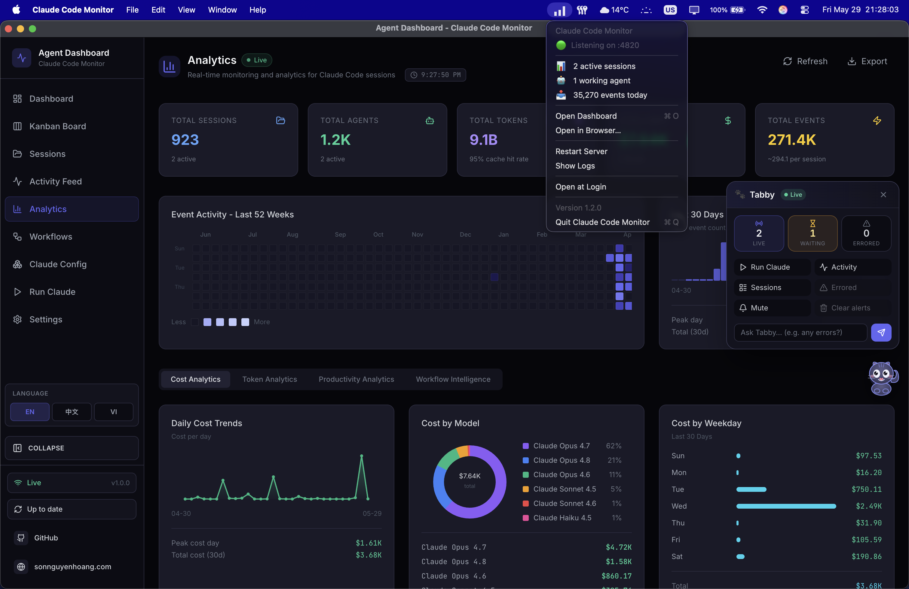
BrowserWindow. Tray icon included. Shipped as a universal DMG — see DESKTOP.md.
Electron is a window onto the same code. The desktop app does not
reimplement the dashboard — it hosts the exact server and client the
standalone deployment runs. The only change outside desktop/ is a
behavior-preserving refactor of server/index.js: its post-listen
bootstrap was extracted into an exported startBackgroundServices()
so the embedded server runs exactly what node server/index.js
runs.
In-Process Architecture
The Electron main process hosts the embedded server and manages the
window, tray, and menus. The renderer is just Chromium loading
http://127.0.0.1:<port> — the same origin a normal browser
would use.
The desktop app embeds the Express server in-process — no child process, no IPC
What It Adds
Menu-Bar (Tray) Icon
An always-on menu-bar icon. A single click (left or right) opens a dropdown with a live status snapshot queried straight from SQLite at click time — server port, active sessions, working agents, events today — followed by Open Dashboard, Open in Browser, Restart Server, Show Logs, Open at Login (toggle), and Quit. The snapshot rows are clickable — they open the dashboard. The menu is rebuilt on each open so every value is current.
Native App Menu
A standard macOS application menu — About, Open at
Login, File, Edit, View,
Window, Help — with ⌘R wired to
View ▸ reload. External links open in the system browser, never
inside Electron.
Auto-Start at Login
Flip Open at Login in the tray or app menu to register the app via
macOS's SMAppService API — it appears under
System Settings → General → Login Items. When macOS launches
the app at login it starts tray-only, with no window jumping into view.
Close Hides, Server Stays Up
Closing the window hides it — the embedded server keeps running, the tray icon
stays, and the dock icon stays too (a clickable "still alive" indicator).
Quit (⌘Q, app menu, or tray → Quit) pops a
confirmation modal — press the Quit button or hit ⌘Q a second
time to skip the prompt — and only then does the embedded server shut down,
closing SQLite cleanly with a WAL checkpoint and removing this PID's entry
from the discovery file.
Runs Alongside the Web Dashboard
Launch the desktop app and npm run dev at the same time and both
stay real-time. Each server appends its {port, pid, startedAt}
entry to ~/.claude/.agent-dashboard.json on startup; the Claude
Code hook handler reads that list and fan-outs every event to every live entry
in parallel. Stale entries self-evict via a PID liveness check on read, so a
crashed server can't misroute events to a dead port.
Single-Instance Lock
Double-launching the app just focuses the existing window — no second server,
no port collision. The lock is acquired via
requestSingleInstanceLock() before any server boots.
First-Boot Bootstrap
On its first owned-server boot the app auto-installs the Claude Code hooks
into ~/.claude/settings.json and starts the background services
(update scheduler, config watcher, orphaned-run reconciliation) — so a
DMG-only user gets events flowing without ever running
npm run install-hooks from a checkout.
Data Persistence & CLI Reliability
Two macOS packaging realities — a read-only .app bundle and the
minimal PATH a Finder-launched app inherits — are handled
automatically so installs survive updates and the Run Claude
feature works out of the box.
The SQLite database and VAPID keys live in
~/Library/Application Support/Claude Code Monitor/data/ —
outside the .app bundle. server-host.ts
points DASHBOARD_DATA_DIR at that per-user directory on boot.
Because a packaged, code-signed, or app-translocated bundle is read-only,
older builds that stored the database inside the bundle broke History
Import; with the data directory now in Application Support, your imported
history and events persist across app reinstalls and updates. After
upgrading from a pre-fix build, re-run Import History → Rescan
once to bridge the one-time gap.
claude CLI is found automatically
A Finder- or Dock-launched macOS app inherits only launchd's minimal
PATH, not your login shell's. At startup
shell-path.ts recovers the user's login-shell PATH
so the Run Claude feature can locate and spawn the
claude CLI. If it still cannot be found, make sure
claude is a real executable on your shell PATH — a
shell alias or function cannot be spawned — and check the
user PATH resolved line in
~/Library/Logs/Claude Code Monitor/desktop.log.
Port Discovery
On launch the Electron main process picks a free port. If a healthy dashboard
server already answers /api/health on port 4820 (for
example, you ran npm start in a terminal), the app
adopts that server instead of starting a second one — no
double-binding, no SQLite contention. An adopted server is not owned by the app,
so quitting leaves it running.
| Step | Port choice |
|---|---|
| Adopt | A healthy server already on 4820 is adopted as-is |
| Preferred | 4820 when free |
| Fallback | The first free port in 4821–4829 |
| Last resort | A random high port when all of the above are taken |
How to Get It
Three ways to obtain the desktop app — the latest GitHub Release (best for most users), a per-commit CI artifact (fresher than the latest release), or a local build.
Option A — download the latest GitHub Release (recommended)
Open
Releases → latest
and download
ClaudeCodeMonitor-<version>-universal.dmg from the assets. The
macOS Desktop CI job auto-publishes a new vX.Y.Z release every time
the version in package.json is bumped on master, so this
link always points at the current build. Releases are public — no GitHub sign-in
required.
Option B — per-commit CI artifact
Want a build straight off the tip of master, ahead of the next tagged
release? Every green run of the 🍎 macOS Desktop (DMG) job on
macos-latest uploads the universal DMG as the
ClaudeCodeMonitor-dmg workflow artifact. Open the
latest passing run
,
scroll to its Artifacts section, and download
ClaudeCodeMonitor-dmg. (GitHub sign-in required; 14-day retention.)
Option C — build locally
From the project root, after git clone:
# 1. Install root + client + vscode-extension deps
npm run setup
# 2. Build the React client (the SPA the Electron window loads)
npm run build
# 3. Install Electron + electron-builder under desktop/
npm run desktop:install
# 4. Build a DMG — pick ONE:
npm run desktop:dmg:arm64 # Apple Silicon only — fast (~1 min), recommended
npm run desktop:dmg:x64 # Intel only — fast
npm run desktop:dmg # universal (x64 + arm64) — for release, SLOW
# Each desktop:dmg* build wipes release/ first and emits a single arch-labelled
# DMG, so the volume title states the architecture (e.g. "Claude Code Monitor
# (Apple Silicon)") — no ambiguity when more than one DMG is on disk.
open desktop/release/ClaudeCodeMonitor-*-arm64.dmg # match the arch you built
The universal desktop:dmg build is intentionally slow: it builds
the full app tree twice (once per architecture), merges both with
@electron/universal, and ad-hoc-signs every binary in the merged
bundle. For running on a single Mac, use desktop:dmg:arm64
(Apple Silicon) or desktop:dmg:x64 (Intel) — one architecture,
no merge, finishing in roughly a minute instead of many. Reserve the universal
build for release artifacts; CI already produces one as
ClaudeCodeMonitor-dmg, so you rarely need to build it yourself.
Install
Open the DMG
Double-click the downloaded .dmg to mount it
Drag to Applications
Drag Claude Code Monitor.app into your Applications folder
Clear Quarantine
Run xattr -cr on the app to get past Gatekeeper (see below)
Launch
Open the app — the tray icon appears and the dashboard window loads
The DMG is ad-hoc signed by default — that is all the project can offer without a paid Apple Developer ID. macOS warns the first time you open it ("Apple could not verify…"). Strip the quarantine attribute to get past it:
# After dragging the app into /Applications:
xattr -cr "/Applications/Claude Code Monitor.app"Alternatively, open System Settings → Privacy & Security, find the blocked app, and click Open Anyway. Code signing and Apple notarization are opt-in for the maintainer — when configured, this warning goes away for everyone.
The DMG is roughly 80 MB, about 250 MB installed on disk — the
standard Electron tax. The app is macOS-only in v1; Windows and Linux are
tracked as follow-ups. Logs live at
~/Library/Logs/Claude Code Monitor/desktop.log (reach them from
the tray menu → Show Logs).
📖 User-facing guide: DESKTOP.md ·
architecture & contributor reference:
desktop/README.md
Settings Page
The /settings route provides a comprehensive management interface with
six sections:
Model Pricing
Editable table of per-model pricing rules. Each Claude model variant has its own
explicit pattern (e.g., claude-opus-4-6%). Rates cover input, output,
cache read, and cache write tokens. Reset to defaults or add custom models. The
section header carries an info popover (the i icon) that explains how
rule lookup works (first matching pattern wins), the SQL-style %
wildcard syntax with concrete examples (claude-opus-4-7%,
claude-%-haiku, exact ids), and reminds the user that prices must be
updated manually when Anthropic publishes new rates — already-stored sessions keep
the price applied at ingest time. The CLAUDE_HOME panel and Import History flow are
fully i18n-driven across en/vi/zh.
Hook Configuration
Shows per-hook installation status (SessionStart, PreToolUse, PostToolUse, Stop, SubagentStop, Notification, SessionEnd). One-click reinstall if hooks are missing or outdated. Validates paths and permissions automatically.
Data Management
View database row counts and size. Session cleanup: abandon stale active sessions after N hours, purge old completed sessions after N days. Danger zone: clear all data with confirmation dialog to prevent accidental loss.
Data Export
Download all sessions, agents, events, token usage, and pricing rules as a single JSON file for backup or analysis. Includes full event history, model metadata, and cost breakdowns in one portable archive.
System Health
Dedicated Health tab on the Dashboard with a composite health score (weighted from success rate, cache hit rate, error rate, and heap usage), storage engine donut chart, tool invocation frequency bars, subagent effectiveness, model token distribution, and compaction impact — all with cursor-following tooltips and 5-second auto-refresh.
Notification Preferences
Configure native browser notifications with per-event toggles for session starts, completions, errors, and subagent spawns. Automatic permission management with test-send button and graceful fallback when denied.
Each Claude model variant (e.g., Opus 4.6 vs Opus 4.1) has its own explicit pricing pattern because different model versions have different rates. The cost engine uses specificity sorting — longer patterns match before shorter ones.
Update Notifier

A detection-only subsystem that tells the user when the dashboard's git checkout is
behind the canonical default branch. Branch- and fork-aware: if an
upstream remote is configured (the standard convention for forks), it
takes priority over origin; the chosen remote's
master / main / HEAD is the comparison ref.
The printed command adapts to the user's situation — git pull --ff-only
only when their branch actually tracks the canonical ref, otherwise
git fetch (with a fast-forward merge in the fork case). The server
never pulls or restarts itself — the user runs the command in a
terminal — so the mechanism cannot break dev sessions, pm2/systemd/launchd/Docker
supervision, or leave orphaned processes.
Detection pipeline from scheduler to UI
Non-Blocking Detection
A shell-less git fetch with a 120-second timeout, followed by a
rev-list against the tracked upstream. Each call runs from
server/lib/update-check.js and returns a structured payload —
never throws — so a flaky remote can't stall the dashboard.
5-min Scheduler
update-scheduler.js polls every five minutes with .unref()
timers so it never blocks shutdown, de-duplicates with a fingerprint over the
status payload, and announces up-to-date → behind transitions in a framed stdout
block. Disable entirely with DASHBOARD_UPDATE_CHECK=0.
Situation-Aware Command
Each status payload carries a manual_command shaped for the user's
actual situation: git pull --ff-only on a tracked canonical branch,
git fetch && git merge --ff-only for forks where local
tracks the wrong remote, and a plain git fetch on a feature branch
where pulling would update the wrong branch. Install / build steps are appended
only when the working tree is actually being rewritten.
Two UI Surfaces
A modal opens automatically when upstream is ahead; ESC or a backdrop click dismisses it. A persistent sidebar button stays in the footer — emerald when behind, amber when the last check errored — so users can always trigger a fresh check on demand.
Soft Failure Semantics
Non-git installs, no remotes configured, offline fetches, and unresolvable upstream refs all return tagged payloads instead of throwing. The sidebar badge turns amber on fetch errors and the modal stays suppressed until a successful check arrives — no spinners, no stuck state.
Dismissal Memory
Dismissal is keyed by the upstream SHA in localStorage, so closing
the modal silences it only for that commit — a newer upstream commit
re-opens it automatically. Clicking the sidebar button is an explicit intent
signal and clears the stored dismissal before firing a fresh check.
API Surface
| Endpoint | Purpose |
|---|---|
GET /api/updates/status |
Read-only check — runs git fetch, compares, returns the payload. |
POST /api/updates/check |
Same check, and broadcasts update_status over WebSocket so every connected client re-syncs at once. |
There is no POST /api/updates/apply and no in-process restart
helper. A process cannot reliably replace itself without an external supervisor,
and npm run dev, npm start, pm2, systemd, launchd, and
Docker each need different restart logic. Detection-only keeps the mechanism
portable across every supervisor and OS, and leaves the dashboard's lifecycle
owned by whatever started it. The user runs the printed command in their own
shell.
Connection Status

The Live / Disconnected pill in the sidebar footer
opens a small details panel about the dashboard's WebSocket transport. It surfaces the
active ws:// endpoint, how long the current socket has been up, total
events received, the top event types as a horizontal bar chart, a 60-second
throughput sparkline, and the most recent 8 events as an activity list. Cumulative
stats (totals, type breakdown, recent list) persist across reloads via
localStorage under sidebar-connection-stats; the rolling
sparkline and "connected since" timer are intentionally ephemeral since they only
make sense relative to "now". A Reset button clears everything on
demand.
Implementation note: per-event state lives in useRef buffers on the
sidebar so the WS firehose never re-renders the navigation tree — the modal does its
own one-second tick to sample the refs while open. Writes are throttled (single-flight
timer, 2 s window) and flushed on pagehide / visibilitychange
so the latest events aren't lost to the throttle window. The modal itself is
portalled to document.body so the sidebar's stacking context can't trap
it.
🐾 Tabby — Reactive Cat Companion
Tabby is a cute SVG cat companion pinned to the
edges of every page of the dashboard. It is always
present and turns the live session stream into glanceable, ambient feedback — calm when
idle, alert when something needs attention, and celebratory when a run finishes. Tabby
is built entirely on the existing eventBus WebSocket stream:
no new backend, no API key, and no new dependencies. The component
lives in client/src/components/Tabby/ and can be toggled on or off in
Settings page.
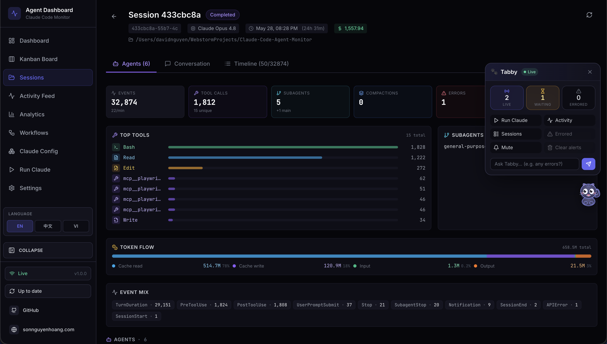
Reactive Mascot — Eight Moods
Tabby derives one of eight moods from the live session WebSocket stream, each with its own animation. The eyes track your cursor, and the active mood drives a distinct motion cue.
| Mood | When it appears | Animation |
|---|---|---|
| Idle | Nothing notable happening | Gentle tail flick |
| Watching | Sessions active, observing the stream | Ear perk, cursor-tracking eyes |
| Happy | A run completed successfully | Sparkle |
| Worried | Something looks off | Head bob |
| Stuck | A session appears blocked | Shake + alert ! |
| Thinking | Work in progress | Head bob |
| Sleeping | Quiet for a while | Zzz |
| Disconnected | WebSocket offline | Calm, dimmed state |
Auto-Surface Speech Bubbles
Notable events — session started or finished, errors, and run completed — automatically
surface a speech bubble. Bubbles are throttled and coalesced so bursts
of events never spam you, and they can be muted on demand. Everything reflects in real
time over the existing eventBus WebSocket channel, with no polling and no
extra services.
The ⌘B Panel
Click the cat — or press ⌘B / Ctrl+B — to open Tabby's panel
(Esc closes it). The panel groups a live status line, quick actions, and an
Ask box.
- Live status line: N live · M errored · connection state, updated from cached data.
- Quick actions: jump to Run Claude, Activity, Sessions, or errored sessions; mute bubbles; clear alerts.
- Ask box: answers simple status questions locally from cached data (“what's running”, “any errors”, “status”).
Ask → Run Claude Handoff
The Ask box answers status questions instantly and offline from cached data. For
anything beyond a simple status question, Tabby hands off to the existing
Run Claude page (/run?prompt=...) to spawn a real Claude
Code session — so there is never a separate model call, key, or service to manage.
Accessibility & Resilience
-
Fully keyboard operable:
⌘B/Ctrl+Bto open,Escto close. -
Status and bubbles announce via
aria-livefor screen readers. -
Respects
prefers-reduced-motionto calm animations. - Degrades gracefully to a calm, dimmed disconnected state when offline.
Deployment Modes
Development vs production deployment topology
| Aspect | Development | Production |
|---|---|---|
| Processes | 2 (Express + Vite) | 1 (Express only) |
| Client URL | http://localhost:5173 |
http://localhost:4820 |
| API proxy | Vite proxies /api + /ws to :4820 |
Same origin, no proxy |
| File watching | node --watch + Vite HMR |
None |
| Source maps | Inline | External files |
Beyond development and standalone production, the dashboard also ships as a
native macOS .app that embeds the same production server
in-process — no terminal required. See the
macOS Desktop App section for download, build, and
install instructions.
Container Runtime (Docker / Podman)
The production image is OCI-compatible and works with both Docker and Podman. The
server listens on 4820, reads legacy Claude history from a read-only mount,
and persists SQLite data under /app/data.
Container image build and runtime mounts
# Docker Compose
docker compose up -d --build
# Podman Compose
CLAUDE_HOME="$HOME/.claude" podman compose up -d --build
# Stop the stack
docker compose down
# or
podman compose down| Mount | Purpose |
|---|---|
~/.claude:/root/.claude:ro |
Read historical Claude session files for import without modifying them |
agent-monitor-data:/app/data |
Persist the SQLite database across rebuilds and container restarts |
Claude Code fires hooks from the host machine, not from inside the container. After
the container is healthy on http://localhost:4820, run
npm run install-hooks on the host so hook events post back to the
containerized server.
Docker / Podman
A multi-stage Dockerfile and docker-compose.yml are included.
Both Docker and Podman are fully supported — the image is OCI-compliant.
Quick Start
# Docker Compose
docker compose up -d --build
# Podman Compose
CLAUDE_HOME="$HOME/.claude" podman compose up -d --buildPlain Docker / Podman (no Compose)
# Build the image
docker build -t agent-monitor .
# — or —
podman build -t agent-monitor .
# Run the container
docker run -d --name agent-monitor \
-p 4820:4820 \
-v "$HOME/.claude:/root/.claude:ro" \
-v agent-monitor-data:/app/data \
agent-monitorVolume Mounts
| Mount | Purpose |
|---|---|
~/.claude:/root/.claude:ro |
Read-only access to legacy session history for automatic import on startup |
agent-monitor-data:/app/data |
Persists the SQLite database across container restarts |
Multi-Stage Build
The Dockerfile uses three stages to minimize the final image size:
| Stage | Purpose |
|---|---|
| server-deps | Installs production node_modules on node:22-alpine. better-sqlite3 is optional — if prebuilds are unavailable, the server falls back to built-in node:sqlite |
| client-build | Runs npm ci + vite build to produce optimized static assets |
| runtime | Clean node:22-alpine with only node_modules, server code, and client/dist |
Claude Code hooks run on the host, not inside the container. The containerized server
receives hook events via HTTP on localhost:4820. Run
npm run install-hooks on the host after starting the container.
Performance Characteristics
| Metric | Value | Notes |
|---|---|---|
| Server startup | < 200ms | SQLite opens instantly; schema migration is idempotent |
| Hook latency | < 50ms | Transaction + broadcast, no async I/O beyond SQLite |
| Client JS bundle | 200 KB / 63 KB gzip | CSS: 17 KB / 4 KB gzip |
| WebSocket latency | < 5ms | Local loopback, JSON serialization only |
| SQLite write throughput | ~50,000 inserts/sec | WAL mode on SSD; far exceeds any hook event rate |
| Max events before slowdown | ~1M rows | Pagination prevents full-table scans |
| Server memory | ~30 MB | SQLite in-process, no ORM overhead |
| Client memory | ~15 MB | React + Tailwind, minimal runtime deps |
Security Considerations
| Area | Approach |
|---|---|
| SQL injection | All queries use prepared statements with parameterized values — no string interpolation |
| Request size | Express JSON body parser limited to 1MB |
| Input validation | Required fields checked before DB operations; CHECK constraints on status enums |
| Hook safety |
Hook handler always exits 0; 5s max lifetime; uses 127.0.0.1 not
external hosts
|
| CORS | Enabled for development; in production same-origin (Express serves the client) |
| Authentication | Intentionally none — local dev tool. Restrict via firewall if exposing on LAN. |
| Secrets | No API keys, tokens, or credentials stored or transmitted anywhere |
| Dependency surface | 5 runtime server deps, 6 runtime client deps (includes D3.js for Workflows) — minimal attack surface |
Troubleshooting
No sessions appearing after starting Claude Code
Check 1 — Is the server running?
curl http://localhost:4820/api/health
# Expected: {"status":"ok","timestamp":"..."}Check 2 — Are hooks installed?
# Open ~/.claude/settings.json and confirm it contains "hook-handler.js"
# If not, re-run:
npm run install-hooksCheck 3 — Start a new Claude Code session
Hooks only apply to sessions started after installation. Restart Claude Code after starting the dashboard.
Check 4 — Is Node.js in PATH?
On some systems the shell environment when Claude Code fires hooks may not include the
full PATH. Test with node --version. If not found, use the absolute path to
node in the hook command.
Common Issues
| Problem | Solution |
|---|---|
better-sqlite3 errors during install |
This is non-fatal — better-sqlite3 is an optional dependency. On
Node 22+ the server automatically falls back to built-in
node:sqlite. On older Node versions, install Python 3 + C++ build
tools, then run npm rebuild better-sqlite3.
|
| Dashboard shows "Disconnected" |
Server is not running. Start it with npm run dev. Client
auto-reconnects every 2s.
|
| Events Today shows 0 | Ensure you are on the latest version (timezone bug was fixed). Restart the server. |
| Port 4820 already in use |
Run DASHBOARD_PORT=4821 npm run dev, update Vite proxy in
client/vite.config.ts, and re-run
npm run install-hooks.
|
| Stale seed data shown | Run npm run clear-data to wipe all rows, then restart. |
| Hooks show validation error about matcher |
Ensure you're on the latest version — the hook format was updated to use
matcher: "*" string (not object).
|
| "SQLite backend not available" on startup |
Neither better-sqlite3 nor node:sqlite could load.
Upgrade to Node.js 22+ (recommended), or install Python 3 + C++ build tools
and run npm rebuild better-sqlite3.
|
| Docker container runs but no sessions appear |
Hooks run on the host, not inside the container. Run
npm run install-hooks on the host after the container starts.
Verify hooks in ~/.claude/settings.json point to
localhost:4820.
|
Technology Choices
| Technology | Why This Over Alternatives |
|---|---|
| SQLite (better-sqlite3 / node:sqlite) |
Zero-config, embedded, no server process. WAL mode gives concurrent reads.
Synchronous API is simpler than async for this use case.
better-sqlite3 is preferred when prebuilds are available; falls back
to Node.js built-in node:sqlite on Node 22+ when the native module
cannot be compiled.
|
| Express |
Battle-tested, minimal, well-understood. Fastify would be overkill; raw
http module would require too much boilerplate for routing.
|
| ws | Fastest, most lightweight WebSocket library for Node. No Socket.IO overhead needed — we only push typed JSON messages one-way. |
| React 18 | Stable, widely known, strong TypeScript support. No Server Components or RSC needed for a client-rendered local SPA. |
| Vite 6 | Fast builds, native ESM, excellent dev experience. Proxy config handles the dev server split cleanly with no ejection. |
| Tailwind CSS | Utility-first approach keeps styles colocated with markup. No CSS module boilerplate. Custom dark theme config for the dark UI. |
| React Router 6 |
Standard routing for React SPAs. Layout routes with
<Outlet> give clean shell composition without prop drilling.
|
| Lucide React | Tree-shakeable icon library — only imports what's used (~20 icons). No heavy icon font. |
| TypeScript Strict |
Catches null/undefined bugs at compile time.
noUncheckedIndexedAccess prevents array bounds issues in analytics
aggregations.
|
| D3.js + d3-sankey | Industry-standard data visualization library. Powers the Workflows page's 11 interactive sections — DAG layouts, Sankey diagrams, force-directed graphs, bubble charts, and swim-lane timelines. No wrapper libraries needed; direct SVG rendering keeps bundle impact minimal. |
| Python (statusline) | Available on virtually all systems. Handles ANSI and JSON natively with stdlib only. No install step required. |